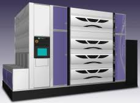
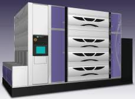

Pro-Z Pro-2
Pro-Z Pro-2
De TEL Lithius Pro-2 & Lithius Pro-Z is een coating- en ontwikkelmachine (ook wel "track" genoemd) die wordt gebruikt in de halfgeleiderindustrie (chips maken).
De machine is gemaakt door Tokyo Electron Limited (TEL), een groot Japans bedrijf gespecialiseerd in apparatuur voor de productie van halfgeleiders.
De machine verzorgt belangrijke stappe in het fotolithografieproces, namelijk:
- Coaten
- Softbake
- Developen (ontwikkelen)
- Hardbake
Het coaten van onze wafers gebeurd met behulp van deze track. In deze track kunnen we wafers voorzien van een laag resist.
De track heeft verschillende spincoatmodules, zodat er meerdere wafers tegelijk kunnen worden gecoat.
Verdere componenten van de track zijn onder andere bakplaten, ontwikkelmodules, chemicaliënkabinetten en diverse randapparatuur.
We kunnen het traject van de wafer bepalen en/of sturen met de waferflow. Dit is een soort van programma waar je stapsgewijs aangeeft welke bewerking de wafer ondergaat.
Voor iedere bewerking staat er in de track een recept. Met het spinnerrecept kunnen we de parameters voor de dosering regelen tijdens het spincoaten.
Denk hierbij aan doseringssnelheid, doseringstijd, toerental van de wafer, enzovoorts.
De Pro-Z is een snellere en verbeterde versie van de Pro-2.